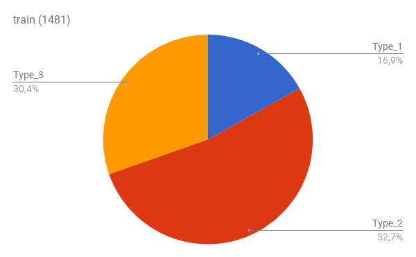
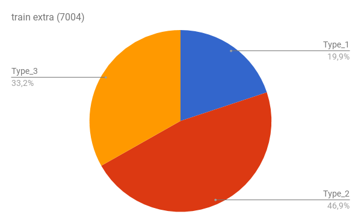
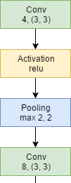
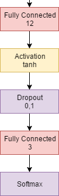
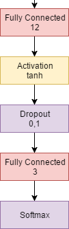
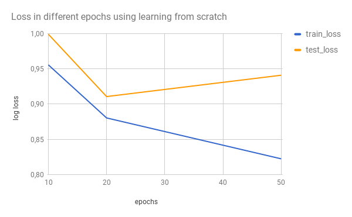
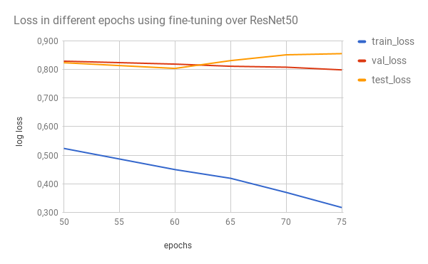

SIGE - Práctica 2
Clasificación de imágenes
Francisco Javier Bolívar Lupiáñez
Juan Pablo González Casado
fblupi.es/master_informatica-SIGE/Exploración de datos
Datos de Kaggle
- Imágenes de cérvix
- Formato: JPG
- Tamaño: 3096x4128
- Peso: 2.5 a 7.5 MB
Test
- 512 imágenes
Train
- ~1500 + ~5500 imágenes
Dataset no balanceado
Train
Dataset no balanceado
Train extra
Pre-procesamiento de datos
Imágenes que no corresponde a un cérvix


Balanceo de clases
Train extra con undersampling

Técnicas de clasificación
Learning from scratch
- Crear CNN desde cero
- Empezamos con MXNet pero pasamos a Keras
- Seguimos un kernel que habían publicado en Kaggle que incluía data augmentation
Topología
 

Fine-tuning
- Utilizar como base una CNN ya entrenada
- Solo habría que añadir una capa de salida con el número de salidas que queramos
- Keras ofrece:
- Xception
- VGG16
- VGG19
- ResNet50
- InceptionV3
OVO y OVA
- One vs One (OVO)
- One vs All (OVA)
- Objetivo: Convertir problema multiclase en binario
OVO
- Construir tres clasificadores:
- 1 vs 2
- 1 vs 3
- 2 vs 3
- Combinar resultados de cada uno:
- Producto normalizado
- Media
OVA
- Construir tres clasificadores:
- 1 vs 2-3
- 2 vs 1-3
- 3 vs 1-2
- Normalizar salida
Extracción de características
- Extraer mapa de características de una CNN
- Usar técnicas clásicas de machine learning:
- Random forest
- Boosting
- Support Vector Machine (SVM)
- Podemos encontrarlas en la librería scikit-learn
Ensemblers
- Usar varios clasificadores
- CNNs
- Técnicas clásicas de machine learning
- Combinar resultados
Presentación y discusión de resultados
Learning from scratch
- Comenzamos con MXNet pero predecía el mismo resultado para todas las imágenes
- Nos pasamos a Keras con el script del kernel de Kaggle
- Se usó el conjunto de datos desequilibrado con las imágenes extra
- Se realizaron experimentos variando parámetros
- Red simple -> Entrenamiento relativamente rápido (1 hora máximo)
Estudio del sobre aprendizaje
Otros experimentos
- Imágenes 32x32 y 128x128 daban prácticamente el mismo resultado
- Más samples per epoch hacía que se aprendiese (y sobreaprendiese) antes
- Dataset balanceado bajó de ~0.91 a ~0.87
- Red más compleja:
- Dos ciclos más de Conv-Act-Pool
- Más capas Fully Connected
- La red daba peores resultados -> No sabemos hacer una topología buena
Fine tuning
- Implementación fácil, pero problemas a mansalva:
- No podíamos alojar a 224x224 las 7000 imágenes -> Tuvimos que hacer el undersampling
- Tiempo de cómputo: Una época tardaba entre 40 y 80 minutos
- Se llegaron a entrenar redes durante 13 horas con un ordenador que funcionó con los 8 núcleos al 100% durante 3 días seguidos sin descanso
Experimentos
- Se probó con distintas topologías pero las submissions se hicieron solo con ResNet50 porque con el resto no aprendían bien ni el conjunto de train
- Se crearon tres topologías
- Solo una capa Fully Connected para la salida
- Ejemplo de Keras: Una capa Fully Connected intermedia de tamaño 1024
- Ejemplo de Keras: Una capa Fully Connected intermedia de tamaño 512
Topologías


- Con la primera no se obtenían buenos resultados
- Con la segunda sobre aprendía muy rápido
Otros experimentos
- Se probó ajustando batch y samples per epoch como en learning from scratch
- Se probó el entrenamiento en dos fases que se proponía en Keras
- Primera: Se ajustan solo los pesos de las capas añadidas
- Segunda: Se ajustan los pesos de las últimas capas de ResNet50
- Así se obtuvo el mejor resultado ~0.8 en la época 20+40
Estudio del sobre aprendizaje
Conclusiones
Conclusiones positivas
- Práctica interesante al ser un problema real
- Gratificante verse en el top 200 de ~850 equipos
- Pero...
Conclusiones negativas
- Requisitos hardware elevados. Solo servía el ordenador de uno de los dos
- Tiempos muy elevados debido a estos requisitos hardware por no tener GPU
- Los requisitos en memoria nos impedía hacer mucho data augmentation (tuvimos que hacer undersampling en lugar de oversampling para equilibrar las clases)
- Mucho tiempo perdido mientras entrenaban las redes nos impidió probar otras técnicas
- Más momentos de desesperación que de ilusión